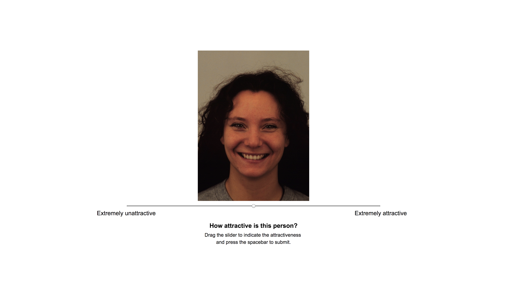
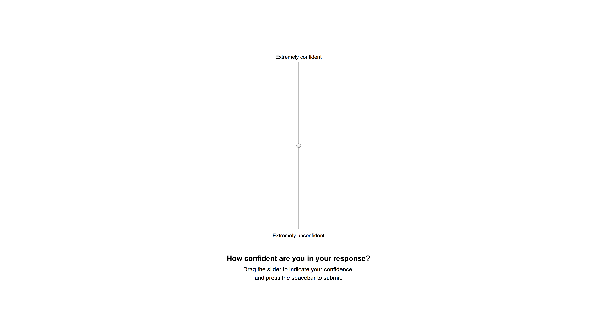

<!DOCTYPE html>
<html>
<head>
        <!--Change the title-->
        <title>Furl Replication with Confidence</title>
        
        <!--jsPsych necessities start-->
        <script src="https://ajax.googleapis.com/ajax/libs/jquery/3.3.1/jquery.min.js"></script>
        <script src="../static/js/jsPsych-6.0.1/jspsych.js"></script>
        <link href="../static/js/jsPsych-6.0.1/css/jspsych.css" rel="stylesheet" type="text/css"></link>
        <!--jsPsych necessities end-->
        
        <!--jsPsych plugins start-->
        <script src="../static/js/jsPsych-6.0.1/plugins/jspsych-image-slider-response.js"></script>
        <script src="../static/js/jsPsych-6.0.1/plugins/jspsych-html-slider-response.js"></script>
        <script src="../static/js/jsPsych-6.0.1/plugins/jspsych-survey-multi-choice.js"></script>
        <script src="../static/js/jsPsych-6.0.1/plugins/jspsych-call-function.js"></script>
        <script src="../static/js/jsPsych-6.0.1/plugins/jspsych-instructions.js"></script>
        <script src="../static/js/jsPsych-6.0.1/plugins/jspsych-fullscreen.js"></script>
        <script src="../static/js/jsPsych-6.0.1/plugins/jspsych-html-button-response.js"></script>
        <script src="../static/js/jsPsych-6.0.1/plugins/jspsych-external-html.js"></script>
        <script src="../static/js/jsPsych-6.0.1/plugins/jspsych-html-keyboard-response.js"></script>
        <!--jsPsych plugins end-->
</head>
<body>
</body>
<script>
    
        //Data switches
        var saveLocally = 0;	// 0: Nothing.      1: Download CSV file
        var displayData = 0;  // 0: Nothing.      1: Display data on browser
        var launchOnline = 1;	// 0: Nothing.		  1: Save to database, consent form, completion code generation, dummy variables created for all 3 IDs
        var tableName = 'Furl_Replication_with_Confidence'; //Name of the table in the database
        
        //Get the info from mTurk
        var turkInfo = jsPsych.turk.turkInfo();
        
        //If we're not on mTurk, we create our own values
        if(turkInfo.outsideTurk === true){
            
            // Use the timestamp as a unique id (specific to the second)
            var timestamp = Math.floor(Date.now()/1000);
            
            workerId = "workerId_" + timestamp;
            assignmentId = "assignmentId_" + timestamp;
            hitId = "hitId_" + timestamp;
            
        }
        //Else we're on mTurk and we get the values
        else{
          
            var workerId = turkInfo.workerId;
            var assignmentId = turkInfo.assignmentId;
            var hitId = turkInfo.hitId;
        
        }
        
        //Print out to console to check
        console.log("workerId: " + workerId);
        console.log("assignmentId: " + assignmentId);
        console.log("hitId: " + hitId);
    	
        
        //------------------- Your code below this line -------------------
        
        

        
        
        //Parameters
        nTrials = 150; //Must be even number
        nTarget = 5;//debug...5; //nTarget + nDistractor = 15
        nDistractor = 10;//debug...10;
        
        //Declare arrays
        target_female_array = [];
        distractor_female_array = [];
        target_male_array = [];
        distractor_male_array = [];
        
        //Declare global variables
        nCorrect = 0; //Counter for how many 3AFC trials the subject gets correct
        
        
        //Wrappers for font sizes
        var wrapperStart = "<div style='font-size: 24px; font-family: Helvetica, sans-serif'>";
        var wrapperEnd = "</div>";
        
        //The array of male stimuli
        var female_stimuli = [
          {path: '../static/images/female/AF01HAS.JPG'},
          {path: '../static/images/female/AF02HAS.JPG'},
          {path: '../static/images/female/AF03HAS.JPG'},
          {path: '../static/images/female/AF04HAS.JPG'},
          {path: '../static/images/female/AF05HAS.JPG'},
          {path: '../static/images/female/AF06HAS.JPG'},
          {path: '../static/images/female/AF07HAS.JPG'},
          {path: '../static/images/female/AF08HAS.JPG'},
          {path: '../static/images/female/AF09HAS.JPG'},
          {path: '../static/images/female/AF10HAS.JPG'},
          {path: '../static/images/female/AF11HAS.JPG'},
          {path: '../static/images/female/AF12HAS.JPG'},
          {path: '../static/images/female/AF13HAS.JPG'},
          {path: '../static/images/female/AF14HAS.JPG'},
          {path: '../static/images/female/AF15HAS.JPG'}
        ];

        //The array of female stumuli
        var male_stimuli = [
          {path: '../static/images/male/AM01HAS.JPG'},
          {path: '../static/images/male/AM02HAS.JPG'},
          {path: '../static/images/male/AM03HAS.JPG'},
          {path: '../static/images/male/AM04HAS.JPG'},
          {path: '../static/images/male/AM05HAS.JPG'},
          {path: '../static/images/male/AM06HAS.JPG'},
          {path: '../static/images/male/AM07HAS.JPG'},
          {path: '../static/images/male/AM08HAS.JPG'},
          {path: '../static/images/male/AM09HAS.JPG'},
          {path: '../static/images/male/AM10HAS.JPG'},
          {path: '../static/images/male/AM11HAS.JPG'},
          {path: '../static/images/male/AM12HAS.JPG'},
          {path: '../static/images/male/AM13HAS.JPG'},
          {path: '../static/images/male/AM14HAS.JPG'},
          {path: '../static/images/male/AM15HAS.JPG'}
        ];
        
        //Extract the info of objects in the array
        female_stimuli = extractInfo(female_stimuli);
        male_stimuli = extractInfo(male_stimuli);
        
        console.log("female_stimuli:");
        console.log(JSON.parse(JSON.stringify(female_stimuli)));
        console.log("male_stimuli:");
        console.log(JSON.parse(JSON.stringify(male_stimuli)));
        
        //Trial counter to manage the loop node
        var trialCounter = 0;
        
        //The AFC Trial to be looped
        var AFCTrial = {
          type: 'html-button-response',
          stimulus: '',
          prompt: function(){
            return phase2Array[trialCounter].prompt;
          },
          choices: function(){
            return phase2Array[trialCounter].choices;
          },
          data: function(){
            return phase2Array[trialCounter].data;
          },
          on_finish: function(data){
            phase2Array[trialCounter].on_finish(data);
          }
        };
        
        //The Confidence Trial to be looped
        var confidenceTrial = {
          type: 'html-slider-response',
          stimulus: '',
          button_label: function(){
            return phase2Array[trialCounter+1].button_label;
          },
          data: function(){
            console.log(phase2Array[trialCounter+1].data());
            return phase2Array[trialCounter+1].data();
          },
          prompt: function(){
            console.log(phase2Array[trialCounter+1].prompt);
            return phase2Array[trialCounter+1].prompt;
          }
        };
        
        //The loop node that loops through the phase2Array and play all the trials
        var loopNode = {
          timeline: [AFCTrial, confidenceTrial],//Insert the token trials into the timeline
          loop_function: function(data){//Return true to loop
            //If we have not reached the end of the array, then we 'loop' the trial
            if(trialCounter < phase2Array.length-2){
              trialCounter+=2; //Increment the counter to go to the next trial pair
              return true; //Return true so that it loops
            }
            //Else we have reached the end of the array and should stop looping
            else{
              return false; //Return false so that it stops the looping and exits the loop
            }
          }//End of loop_function
        };//End of loop Node
        
        //====== Add to timeline ======
        
        //Timeline array to be fed into the jsPsych.init function
        let timeline = [];
        
        //Push the trials into the timeline array
        timeline.push(makeFullscreenBlock());
        timeline.push(makeInstructions1());
        timeline.push(makePhase1());
        timeline.push(makePhase2());
        timeline.push(makeInstructions2());
        timeline.push(loopNode);
        timeline.push(countCorrect());
        timeline.push(makeInstructions3());
        timeline.push(makeSurvey());
        timeline.push(makeDebriefBlock());
        
        
        
        //====================================================
        //================= FUNCTIONS BEGIN ==================
        //====================================================
        
        
        
        //Function to extract the info of the path name to be properties of the stimuli object
        function extractInfo(stimuliArray){
          
          //Temporary array to store all the modified objects
          var tempArray = [];
          
          //Loop through all the stimuli objects in the stimuli array
          for(var i  = 0; i < stimuliArray.length; i++){
            
            //Load in the current object
            var currentObject = stimuliArray[i];
            
            //Get the face number
            var currentFaceNumber = currentObject.path.match(/\d\d/)[0];
            
            //Get the gender
            var currentGender = currentObject.path.match(/M|F/)[0];
            
            //Load in the gender and the face number as properties of the object
            currentObject.faceNumber = Number(currentFaceNumber);
            currentObject.gender = currentGender;
            
            //Push the modified object into the temp array
            tempArray.push(currentObject);
            
          }//End of for loop
          
          //Return the tempArray
          return tempArray;
          
        }//End of extractInfo function
        
        //Function to return the block that makes the experiment fullscreen
        function makeFullscreenBlock(){
          return{
            type: 'fullscreen',
            button_label: 'Next >',
            message: wrapperStart +
              'When you click "Next" below, your browser will be in fullscreen mode.<p></p>' +
              wrapperEnd,
            fullscreen_mode: true
          };
        }
        
        //Function to make the first instructions block
        function makeInstructions1(){
          
          //---------- Welcome Screen ----------
          
          //Welcome Screen Text
          var welcomeScreenText = wrapperStart +
            "Welcome to the experiment!<br/><br/>" + 
            "This experiment will last <b>30 minutes</b> and you will be compensated <b>$2</b>, with a possibility of getting an <b>extra $1 if you do better than the previous participant</b>.<br/><br/>" + 
            "There will be no break screens built into the experiment, but you are encouraged to take 1-minute breaks every 10 minutes to rest your eyes. <br/><br/>" + 
            "There will be two phases to this experiment, and you will receive separate instructions for each phase." +
            wrapperEnd;
            
          //Create the welcome screen
          var welcomeScreen = {
            type: 'instructions',
            pages:[
              welcomeScreenText
            ],
            show_clickable_nav: true
          };
          
          //---------- Instructions ----------

          //Instructions prompt
          var htmlContent = wrapperStart +
            "<p> Your task in phase 1 is to <b>rate the attractiveness</b> of each of the faces that are presented.<br/>" +
            " Once you have dragged the slider to indicate the attractiveness, press the spacebar to submit and move on to the next trial.<br/><br/>" + 
            "Here is an image of a sample trial just to show you what it looks like:<br/></p>" +
            "" + 
            "<p>Slide the slider based on how attractive or unattractive you think they are. <br/><br/>" +
            "Drag the slider to the <b>left</b> if they are <b>unattractive</b>, and drag the slider to the <b>right</b> if you think they are <b>attractive</b>.</p>" +
            wrapperEnd;
            
          //Create the instructions with the image
          var instructionsScreen = {
            type: 'html-button-response',
            stimulus: htmlContent,
            choices: ['Next >'],
            prompt: wrapperStart +
              'Click "Next" to continue.' +
              wrapperEnd
          };
          
          //---------- End Of Instructions ----------
            
          //End of instructions instructions
          var endOfInstructionsText = wrapperStart +
            "Also, you cannot advance unless you move the slider. <br/><br/>" +
            "There are no right or wrong answers in this experiment, so just respond based on what feels right for you. <br/><br/>" +
            "Click 'Next' to start the experiment." +
            wrapperEnd;
            
          var endOfInstructionsScreen = {
            type: 'instructions',
            pages:[
              endOfInstructionsText
            ],
            show_clickable_nav: true
          };
          
          //---------- Put it all together ----------
          
          return {
            timeline: [
              welcomeScreen,
              instructionsScreen,
              endOfInstructionsScreen
            ]
          };
          
        }//End of makeInstructions1 function
        
        
        //Function to make phase 1 (the face rating phase)
        function makePhase1(){
          
          //Make an array to store all the trials for the first part of phase 1
          var phase1Part1 = [];
          
          //Make a template trial object to rate the faces
          var simObject = {
            type: 'image-slider-response',
            stimulus: '<p> Filler stimulus </p>',//Stimulus will be replaced by the image below
            labels: ['Extremely unattractive', 'Extremely attractive'],
            prompt: "How attractive is this person?",
            button_label: 'Submit',
            response_ends_trial: true,
            on_finish: function(data){
              
              //Determine the gender of the face
              var gender = data.gender;
              
              //Select the array based on the gender
              if(gender === "M"){
                var relevantArray = male_stimuli; //Assignment operator: Points to the same array, not a copy
              }
              else if(gender === "F"){
                var relevantArray = female_stimuli; //Assignment operator: Points to the same array, not a copy
              }
              
              //Look for the object in the relevant array
              for(var i in relevantArray){
                
                //Load in the current object for easy handling
                var currentObject = relevantArray[i];
                
                //If the stimuli matches the path of the object, then we have the correct array
                if(data.path === currentObject.path){
                  
                  //If the rating1 key is not defined, then add the response rating as the rating (as this is probably the first round of ratings)
                  if( !("rating1" in currentObject) ){
                    currentObject.rating1 = data.response;
                    //Add rating1 to the data
                    data.rating1 = data.response;
                  }
                  //Else if the rating2 key is not defined, then we add the response as rating 2 and calculate the average
                  else if ( !("rating2" in currentObject) ){
                    currentObject.rating2 = data.response;
                    //Add rating1 to the data
                    data.rating1 = currentObject.rating1;
                    //Add rating2 to the data
                    data.rating2 = data.response;
                    //Calculate the average rating
                    var averageRating = (currentObject.rating1 + currentObject.rating2)/2;
                    //Add it into the currentObject
                    currentObject.averageRating = averageRating;
                    //Add averageRating into the data
                    data.averageRating = averageRating;
                  }//End of inner if
                }//End of outer if
              }//End of for loop
            }//End of on_finish
          };//End of simObject
          
          //Load in all the paths for male and female faces
          for(var i in female_stimuli){
            
            //---Female---
            
            //Create a new object for the trial
            var newSimObject1 = Object.assign({},simObject);
            //Add in the stimulus path
            newSimObject1.stimulus = female_stimuli[i].path;
            //Add in the data for the trial
            newSimObject1.data = {
              gender: female_stimuli[i].gender,
              faceNumber: female_stimuli[i].faceNumber,
              path: female_stimuli[i].path
            }
            //Push it into the main array
            phase1Part1.push(newSimObject1);
            
            //---Male---
            
            //Create a new object for the trial
            var newSimObject2 = Object.assign({},simObject);
            //Add in the stimulus path
            newSimObject2.stimulus = male_stimuli[i].path;
            //Add in the data for the trial
            newSimObject2.data = {
              gender: male_stimuli[i].gender,
              faceNumber: male_stimuli[i].faceNumber,
              path: male_stimuli[i].path
            }
            //Push it into the main array
            phase1Part1.push(newSimObject2);
            
          }//End of for loop
          
          //Shuffle the array and save it as the first part
          var phase1Part1 = jsPsych.randomization.shuffle(phase1Part1);
          
          //Make a copy of the previous array, shuffle it, and save it as the second part
          var phase1Part2 = jsPsych.randomization.shuffle(phase1Part1.slice(0));
          
          //Concatenate the arrays to form the first phase
          var phase1Array = phase1Part1.concat(phase1Part2);
          
          //Shuffle the array and return it
          return {
            type: 'image-slider-response',
            timeline: phase1Array
          };//End of return
        }//End of makePhase1
        
        //Function to make the second instructions block
        function makeInstructions2(){
            
          //---------- Welcome Screen ----------
          
          //Phase2 Intro Text
          var phase2IntroText = wrapperStart +
            "Great job on phase 1!<br/><br/>" + 
            "We will now move on to phase 2 of the experiment." +
            wrapperEnd;
            
          //Create the welcome screen
          var phase2IntroScreen = {
            type: 'instructions',
            pages:[
              phase2IntroText
            ],
            show_clickable_nav: true
          };
            
          //---------- Instructions ----------

          //Instructions prompt
          var htmlContent1 = wrapperStart +
            "Your task in phase 2 is to <b>click on the most attractive face.</b><br/><br/>" + 
            "Here is an image of a sample trial just to show you what it looks like:<br/></p>" +
            "" + 
            wrapperEnd;
            
          //Create the instructions with the image
          var instructionsScreen1 = {
            type: 'html-button-response',
            stimulus: htmlContent1,
            choices: ['Next >'],
            prompt: wrapperStart +
              "Click 'Next' to continue." +
              wrapperEnd
          };

          //Instructions prompt
          var htmlContent2 = wrapperStart +
            "Once you have selected the most attractive face, you will be asked to <b>indicate your confidence in your choice</b>.<br/>" + 
            "Drag the slider based on how confident you are about your choice (up is more confident, and down is less confident). <br/>" + 
            "Then press the spacebar to submit and move on to the next trial.<br/><br/>" + 
            "Here is an image of a sample trial just to show you what it looks like:<br/></p>" +
            "" + 
            wrapperEnd;
            
          //Create the instructions with the image
          var instructionsScreen2 = {
            type: 'html-button-response',
            stimulus: htmlContent2,
            choices: ['Next >'],
            prompt: wrapperStart +
              "Click 'Next' to continue." +
              wrapperEnd
          };
          
            
          //---------- End Of Instructions ----------
            
          //End of instructions instructions
          var endOfInstructionsText = wrapperStart +
            "Also, you cannot advance unless you move the slider. <br/><br/>" +
            "There are no right or wrong answers in this experiment, so just answer based on what feels right to you. <br/><br/>" +
            "Click 'Next' to start the experiment." +
            wrapperEnd;
            
          var endOfInstructionsScreen = {
            type: 'instructions',
            pages:[
              endOfInstructionsText
            ],
            show_clickable_nav: true
            
          };
          
          //---------- Put it all together ----------
          
          return {
            timeline: [
              phase2IntroScreen,
              instructionsScreen1,
              instructionsScreen2,
              endOfInstructionsScreen
            ]
          };
          
        }//End of makeInstructions2 function
        
        //Function that makes the necessary processing for the previous data for phase 2
        function makePhase2(){
          
          //Return the call-function trial object
          return {
            type: 'call-function',
            func: function(){
                
                //--- Male ---
                
                //Sort the faces based on attractiveness rating (largest to smallest)
                male_stimuli = male_stimuli.sort(function(a,b){
                    return (b.averageRating - a.averageRating);
                });
                
                //Rank the faces (largest = 1, smallest = 15)
                for(let i = 0; i < male_stimuli.length; i++){
                    male_stimuli[i].rank = i+1; //index 0 == rank 1 
                }
                
                //Fill in the Target and Distractor Arrays
                target_male_array = male_stimuli.slice(0,nTarget);
                console.log("target_male_array:");
                console.log(target_male_array);
                
                distractor_male_array = male_stimuli.slice(nTarget);
                console.log("distractor_male_array:");
                console.log(distractor_male_array);
                
                
                //--- Female ---
                
                female_stimuli = female_stimuli.sort(function(a,b){
                    return (b.averageRating - a.averageRating); 
                });
                
                //Rank the faces (largest = 1, smallest = 15)
                for(let i = 0; i < female_stimuli.length; i++){
                    female_stimuli[i].rank = i+1; //index 0 == rank 1 
                }
                
                //Fill in the Target and Distractor Arrays
                target_female_array = female_stimuli.slice(0,nTarget);
                console.log("target_female_array:");
                console.log(target_female_array);
                
                distractor_female_array = female_stimuli.slice(nTarget);
                console.log("distractor_female_array:");
                console.log(distractor_female_array);
                
                //Make the phase 2 array
                makePhase2Array();
                console.log(phase2Array);
              
            }//End of func
            
          }//End of return object
        }//End of makePhase2
        
        //Function to make the phase 2 trials
        function makePhase2Array(){
            
            //Declare an array to hold the phase 2 trials
            phase2Array = [];//Global variable
            
            //For loop for each gender
            for(let gender of ["male", "female"]){
                
                //Get the correct gender arrays
                if(gender === "male"){
                    var relevant_target_array = target_male_array;
                    var relevant_distractor_array = distractor_male_array;
                }
                else if(gender === "female"){
                    var relevant_target_array = target_female_array;
                    var relevant_distractor_array = distractor_female_array;
                }
                
                //For loop that creates the trials and pushes it into the array
                for (let i = 0; i < nTrials/2; i++){
                    
                    //Sample the target and distractor faces
                    let targetFaces = jsPsych.randomization.sampleWithoutReplacement(relevant_target_array, 2);
                    let distractorFaces = jsPsych.randomization.sampleWithoutReplacement(relevant_distractor_array, 1);
                    
                    //Concatenate it into trial faces
                    let trialFaces = targetFaces.concat(distractorFaces);
                    
                    //Sort the faces (largest to smallest)
                    trialFaces = trialFaces.sort(function(a,b){
                        return (b.averageRating - a.averageRating);
                    });
                    
                    //Load in the sorted faces for easy handling
                    let targetFace = trialFaces[0];
                    let nonTargetFace = trialFaces[1];
                    let distractorFace = trialFaces[2];
          
                    //Tag the faces
                    targetFace.faceType = "target";
                    nonTargetFace.faceType = "non-target";
                    distractorFace.faceType = "distractor";
                    
                    //Get the data for each face
                    let targetRating = trialFaces[0].averageRating;
                    let nonTargetRating = trialFaces[1].averageRating;
                    let distractorRating = trialFaces[2].averageRating;
                    
                    //Shuffle it again
                    let shuffledTrialFaces = jsPsych.randomization.shuffle(trialFaces);
                    
                    //Load in the shuffled faces for easy handling
                    let face1 = shuffledTrialFaces[0];
                    let face2 = shuffledTrialFaces[1];
                    let face3 = shuffledTrialFaces[2];
                    
                    //Get the target or nontarget presented first
                    if(face1.faceType === "target" || (face2.faceType === "target" && face3.faceType === "non-target")){
                        targetFirst = 1;
                    }
                    else{
                        targetFirst = 0;
                    }
                    
                    //Make the trial
                    var phase2Trial = {
                        type: 'html-button-response',
                        stimulus: '',
                        choices: [
                            makeImageHTML(face1.path),
                            makeImageHTML(face2.path),
                            makeImageHTML(face3.path)
                        ],
                        prompt: '<p> Which face is most attractive? </p>',
                        data: {
                            
                            //Log in the general trial data
                            trialType: "3AFC",
                            gender: gender,
                            
                            //Differences
                            T_NT_Diff: targetFace.averageRating - nonTargetFace.averageRating,
                            T_D_Diff:  targetFace.averageRating - distractorFace.averageRating,
                            N_D_Diff:  nonTargetFace.averageRating - distractorFace.averageRating,
                            
                            //Ratings
                            targetFace_rating: targetFace.averageRating,
                            nonTargetFace_rating: nonTargetFace.averageRating,
                            distractorFace_rating: distractorFace.averageRating,
                            faceRating1: face1.averageRating,
                            faceRating2: face2.averageRating,
                            faceRating3: face3.averageRating,
                            
                            //Face Types
                            faceType1: face1.faceType,
                            faceType2: face2.faceType,
                            faceType3: face3.faceType,
                            
                            //Face Number
                            faceNumber1: face1.faceNumber,
                            faceNumber2: face2.faceNumber,
                            faceNumber3: face3.faceNumber,
                            targetFaceNumber: targetFace.faceNumber,
                            nonTargetFaceNumber: nonTargetFace.faceNumber,
                            distractorFaceNumber: distractorFace.faceNumber,
                            
                            //Ranks
                            faceRank1: face1.rank,
                            faceRank2: face2.rank,
                            faceRank3: face3.rank,
                            targetRank: targetFace.rank,
                            nonTargetRank: nonTargetFace.rank,
                            distractorRank: distractorFace.rank,
                            
                            //Target First
                            targetFirst: targetFirst,
                            
                        },
                        on_finish: function(data){
                            
                            //Get the face that was chosen, in the form of 0 or 1 (0 means first face, 1 means second face).
                            var choice = parseInt(data.button_pressed); //Parse it from string to int
                            
                            //If subject chose the target face
                            if( 
                              (choice === 0 && data.faceType1 === "target") || 
                              (choice === 1 && data.faceType2 === "target") || 
                              (choice === 2 && data.faceType3 === "target") 
                              ){
                              //Add to the data to the data object to be saved
                              data.correct = 1;
                              data.chosenFace = "target";
                            }
                            //Else if they chose the non-target
                            else if( 
                              (choice === 0 && data.faceType1 === "non-target") || 
                              (choice === 1 && data.faceType2 === "non-target") || 
                              (choice === 2 && data.faceType3 === "non-target") 
                              ){
                              //Add to the data to the data object to be saved
                              data.correct = 0;
                              data.chosenFace = "non-target";
                            }
                            //Else if they chose the distractor
                            else if( 
                              (choice === 0 && data.faceType1 === "distractor") || 
                              (choice === 1 && data.faceType2 === "distractor") || 
                              (choice === 2 && data.faceType3 === "distractor") 
                              ){
                              //Add to the data to the data object to be saved
                              data.correct = 0;
                              data.chosenFace = "distractor";
                            }
                        }//End of on_finish
                    };//End of phase2Trial object
                    
                    //Push the trial into the array
                    phase2Array.push(phase2Trial);
                }//End of for loop that creates trials (i)
            }//End of relevantArray for loop (gender)
            
            //Shuffle the phase2Array
            phase2Array = jsPsych.randomization.shuffle(phase2Array);
            
            //Template confidence judgment trial
            var confidenceJudgmentTrialTemplate = {
              type:'html-slider-response',
              stimulus: '',
              prompt: 'How confident are you in your response?',
              button_label: 'Submit',
              data: function(){
                
                //Get the data object of the last trial
                let lastTrialData = jsPsych.data.get().last(1).values()[0];
                
                console.log(lastTrialData);
                
                //Return the data object with the updated variables
                return {
                            
                            //Log in the general trial data
                            trialType: 'confidence',
                            gender: lastTrialData.gender,
                            
                            //Differences
                            T_NT_Diff: lastTrialData.T_NT_Diff,
                            T_D_Diff:  lastTrialData.T_D_Diff,
                            N_D_Diff:  lastTrialData.N_D_Diff,
                            
                            //Ratings
                            targetFace_rating: lastTrialData.targetFace_rating,
                            nonTargetFace_rating: lastTrialData.nonTargetFace_rating,
                            distractorFace_rating: lastTrialData.distractorFace_rating,
                            faceRating1: lastTrialData.faceRating1,
                            faceRating2: lastTrialData.faceRating2,
                            faceRating3: lastTrialData.faceRating3,
                            
                            //Face Types
                            faceType1: lastTrialData.faceType1,
                            faceType2: lastTrialData.faceType2,
                            faceType3: lastTrialData.faceType3,
                            
                            //Face Number
                            faceNumber1: lastTrialData.faceNumber1,
                            faceNumber2: lastTrialData.faceNumber2,
                            faceNumber3: lastTrialData.faceNumber3,
                            targetFaceNumber: lastTrialData.targetFaceNumber,
                            nonTargetFaceNumber: lastTrialData.nonTargetFaceNumber,
                            distractorFaceNumber: lastTrialData.distractorFaceNumber,
                            
                            //Ranks
                            faceRank1: lastTrialData.faceRank1,
                            faceRank2: lastTrialData.faceRank2,
                            faceRank3: lastTrialData.faceRank3,
                            targetRank: lastTrialData.targetRank,
                            nonTargetRank: lastTrialData.nonTargetRank,
                            distractorRank: lastTrialData.distractorRank,
                            
                            //Target First
                            targetFirst: lastTrialData.targetFirst,
                            
                            //Responses
                            correct: lastTrialData.correct,
                            chosenFace: lastTrialData.chosenFace
                  
                };//End of returned object
                
              }//End of data function
            };//End of confidenceJudgmentTemplate
            
            //Length of the array (we need a variable because we're modifying the array length as we go along)
            let phase2ArrayLength = phase2Array.length;
            
            //For loop that adds the confidence trial to the end of each 3AFC trial
            for(let i = 0; i < phase2ArrayLength; i++){
              
              //Index to insert the confidence trial
              let spliceLocation = (i*2)+1;
              
              //Create a copy of the template object
              let objectCopy = Object.assign(confidenceJudgmentTrialTemplate,{});
              
              //Splice it into the phase2Array
              phase2Array.splice(spliceLocation, 0, objectCopy);
              
            }
            
        }//End of makePhase2Array function
        
        //Function to make the image html tag
        function makeImageHTML(path){
          
          //Get the width of the window
          var windowWidth = window.innerWidth;
          
          //Calculate the width of the image
          var imageWidth = windowWidth/4; //Scale it down so that all 3 can fit comfortably
          
          //Constrain the width if it is too large (for very wide screens)
          if(imageWidth > 450){
            imageWidth = 450;
          }
          
          //Return the image tag with the formatting
          return '`;
        
        }//End of makeImageHTML
        
        function countCorrect(){
          
          //Create the countCorrect object to return
          return {
            type: 'call-function',
            func: function(){
              
              //Get the data from the last timeline (the 3AFC trials)
              let dataCollection = jsPsych.data.get();
              
              //Get the number of correct trials
              nCorrect = dataCollection.filter({correct: 1}).count();
              
            },
            on_finish: function(data){
              //Add the nCorrect to the data
              data.nCorrect = nCorrect;
            }
          };
        }
        
        //Function to make the third instructions block
        function makeInstructions3(){
          
          //Page 1 instructions
          var page1 = wrapperStart +
            "Amazing work on phase 2! <br/><br/>" + 
            "You are almost done! <br/><br/>" + 
            "We will now move on to phase 3 of the experiment." +
            wrapperEnd;
            
          //Page 2 instructions
          var page2 = wrapperStart +
            "Phase 3 is a set of 21 simple yes/no questions.<br/><br/>" +
            "You will have to answer all the questions to continue.<br/><br/>" +
            "We ask that you answer this truthfully as your responses are anonymous and will not affect your compensation." +
            wrapperEnd;
            
          //Load it into a trial object and return it
          return {
            type: 'instructions',
            pages:[
              page1,
              page2
            ],
            show_clickable_nav: true
          };
          
        }//End of makeInstructions3 function
        
        //Function to make the survey block
        function makeSurvey(){
          
          //Declare the questions array
          var questionsArray = [
            "1. Do you ever feel as if people seem to drop hints about you or say things with double meaning?",
            "2. Do you ever feel as if things in magazines or TV were written especially for you?",
            "3. Do you ever feel as if some people are not what they seem to be?",
            "4. Do you ever feel as if you are being persecuted in some way?",
            "5. Do you ever feel as if there is a conspiracy against you?",
            "6. Do you ever feel as if you are, or destined to be someone very important?",
            "7. Do you ever feel that you are a very special or unusual person?",
            "8. Do you ever feel that you are especially close to God?",
            "9. Do you ever think people can communicate telepathically?",
            "10. Do you ever feel as if electrical devices such as computers can influence the way you think?",
            "11. Do you ever feel as if you have been chosen by God in some way?",
            "12. Do you believe in the power of witchcraft, voodoo or the occult?",
            "13. Are you often worried that your partner may be unfaithful?",
            "14. Do you ever feel that you have sinned more than the average person?",
            "15. Do you ever feel that people look at you oddly because of your appearance?",
            "16. Do you ever feel as if you had no thoughts in your head at all?",
            "17. Do you ever feel as if the world is about to end?",
            "18. Do your thoughts ever feel alien to you in some way?",
            "19. Have your thoughts ever been so vivid that you were worried other people would hear them?",
            "20. Do you ever feel as if your own thoughts were being echoed back to you?",
            "21. Do you ever feel as if you are a robot or zombie without a will of your own?"
          ];
          
          //Declare the options
          var options = ["Yes","No"];
          
          //Declare an array of questionObjects
          var questionObjectsArray = [];
          
          //Loop through the questions Array and make the question objects
          for(var i = 0; i < questionsArray.length; i++){
            
            //Push the question object into the array
            questionObjectsArray.push({
              prompt: questionsArray[i],
              options: options,
              required: false
            });
            
          }//End of for loop
          
          //Make the trial object and return it
          return {
            type: 'survey-multi-choice',
            questions: questionObjectsArray,
            on_finish: function(data){
              
              //Declare a counter for the PDIs
              var PDI_Yes_Counter = 0;
              var PDI_No_Counter = 0;
              var PDI_Unanswered_Counter = 0;
              
              //Parse the responses
              var responseObject = JSON.parse(data.responses);

              //Loop through the properties of the object
              for(var property in responseObject){
                //Get the current response
                var currentResponse = responseObject[property];
                //If the answer was "Yes", then we increment the counter
                if(currentResponse === "Yes"){
                  PDI_Yes_Counter++;
                }
                else if(currentResponse === "No"){
                  PDI_No_Counter++;
                }
                else{
                  PDI_Unanswered_Counter++;
                }
              }//End of for loop
              
              //Add the counter data to the data object
              data.PDI_Yes = PDI_Yes_Counter;
              data.PDI_No  = PDI_No_Counter;
              data.PDI_Unanswered = PDI_Unanswered_Counter;
              
            }//End of on_finish
          };//End of return
          
        }//End of makeSurvey
        
        //Function to make the debrief block
        function makeDebriefBlock(){
          
          //Page 1 instructions
          var page1 =  wrapperStart +
            "Great work!<br/><br/>" + 
            "You have successfully completed the experiment.<br/><br/>" +
            "Click on the 'Next' button to officially end the experiment and submit the HIT." +
            wrapperEnd;
            
          //Load it into a trial object and return it
          return {
            type: 'instructions',
            pages:[
              page1
            ],
            on_start: function(){
              //Set the variable to true so that we submit the HIT
              allPhasesCompleted = true;
            },
            show_clickable_nav: true
          };//End of return
          
        }//End of makeDebriefBlock function
        
        
        
        //------------------- Your code above this line -------------------
        
        if(launchOnline){
        	timeline.unshift(createConsentFormBlock())
	        timeline.push(createCompletionCodeBlock());
	        timeline.push(createGoodbyeBlock());
    	}

        //Initiate the experiment
        jsPsych.init({
            timeline: timeline,
            on_finish: function(){ //Execute this when the experiment finishes
                if(saveLocally == true){
                    jsPsych.data.get().localSave('csv','testSave.csv'); //Save the data locally in a .csv file
                }
                if(displayData == true){
                    jsPsych.data.displayData(); //Display the data onto the browser screen
                }
            },
            on_trial_finish: function(){ //Execute this after every trial
                if (launchOnline == true){
                    save_data(tableName, [jsPsych.data.get().last(1).values()[0]]);
                }
            }
        });
        
        
        //==============================
        //========= FUNCTIONS ==========
        //==============================
        
        
        //-------- Trial-Making --------
        
        //Creates a consent form trial and returns it
        function createConsentFormBlock(){

	        return {
	          type:'external-html',
	          url: "consentForm.html",
	          cont_btn: "startExperimentButton",
	          check_fn: check_consent
	        };
        }
        
        //Create trial to generate completion code, and check if they've earned a bonus on this session
        function createCompletionCodeBlock(){
        	
	        return {
	            type: 'html-keyboard-response',
	            stimulus: '<center><p class="loader" style="margin-top: 20%">Loading...</p></center>',
	            timing_response: 1,
	            trial_duration: 10,
	            //display_element: $('#vert-center'),
	            on_finish: function()
	            {
	                // Create completionCode and check if it exists in the database. Keep running until a unique one is generated
	                completionCode = Math.floor(Math.random() * 9000000 + 1000000); 
	                checkID(false, completionCode, 'completion_code', tableName, function(exists){getNewSubID(exists);}); 
	            },
	            timing_post_trial: 0
	        };
        }
        
        //Create trial to thank the participate, tell them about their bonus, and display their completionCode completion code
        function createGoodbyeBlock(){
        	
	        return {
	            type: 'html-button-response',
	            stimulus: function()
	            {
	                var output = '<p class="instructions">Thank you for participating!</p>';
	                var data = jsPsych.data.get().last(1).values()[0];
	                var completionCode = data.completion_code;
	                    
	                // Display completionCode completion code
	                output += '<p class="instructions"> Your survey code is: <strong>'+ completionCode + '</strong></p>' +
	                    '<p class="instructions">Please paste this number back into the box at the mTurk HIT website.</p>' +
	                    '<p class="instructions"><i>Do <b>NOT</b> close this window until you have submitted the above code.</i></p>';
	                
	                return output;
	            },
	            choices: ['I have submitted the code. Exit the experiment.'],
	            timing_post_trial: 0
	        };
        }
        
        //-------- Functionality --------
        
        // Function to draw parameters from the URL
        function $_GET(param) 
        {
            var vars = {};
            window.location.href.replace( 
                /[?&]+([^=&]+)=?([^&]*)?/gi, // regexp
                function( m, key, value ) { // callback
                    vars[key] = value !== undefined ? value : '';
                }
            );

            if ( param ) 
            {
                console.log(vars);
                console.log(param);
                return vars[param] ? vars[param] : null;    
            }
            return vars;
        }
        
        // Function to check compare the inputted ID to all IDs of the IDType in the SQL database
        function checkID(async, ID, IDType, data_table, callback)
        {
            $.ajax({
                type:'post',
                cache: false,
                async: async,
                url: 'checkSubID.php',
                data: // Inputs into the .php script
                {
                    ID: ID,
                    IDType: IDType,
                    completeTrials: 3450,
                    data_table: data_table
                },
                success: function(exists)  // Use whatever callback function is specified when calling the checkID function
                {
                    callback(exists);
                },
                error: function (xhr, ajaxOptions, thrownError) 
                {
                   alert(thrownError);
               }
           });
        }
        
        // Callback function for checking if the completionCode exists
        function getNewSubID(exists)
        {
            if (exists === '1' || exists === 1) // If the completionCode exists in the SQL database
            {
                completionCode = Math.floor(Math.random() * 9000000 + 1000000); // Generate new completionCode
                checkID(false, completionCode, 'completion_code', tableName, function(existsNow){getNewSubID(existsNow);}); // Check if the new completionCode exists in the database
            }
            else // If the completionCode doesn't exist in the SQL database
                jsPsych.data.addProperties({completion_code: completionCode}); // Add the completionCode to the data 
        }
        
        //A function to save the data to the SQL table on the server.  This gets called at the end of the file.
        function save_data(data_table,data){
          
            //Add data to the jsPsych data file
            jsPsych.data.addProperties({
                workerId: workerId,
                assignmentId: assignmentId,
                hitId: hitId
            });
          
            //Use AJAX to post the data onto the server
            $.ajax({
                type:'post',
                cache: false,
                url: 'savedata.php',
                data: {
                    table: data_table,
                    json: JSON.stringify(data),
                },
                success: function(output) { console.log(output); } // write the result to javascript console
            });
        }
      
        // sample function that might be used to check if a subject has given
        // consent to participate.
        function check_consent(elem) {
          if ($('#consent_checkbox').is(':checked')) {
            return true;
          }
          else {
            alert("If you wish to participate, you must check the box next to the statement 'I agree to participate in this study.'");
            return false;
          }
          return false;
        };


  </script>
  </html>